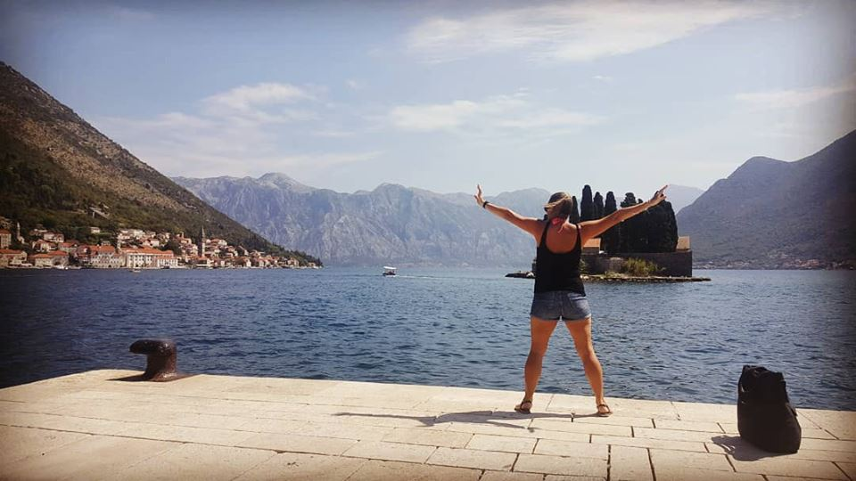

My name is Lucia Espiga I am currently a resident of the Netherlands, where I reside with my 2 year old daughter and my partner. Technically I am a born citizen of Uruguay (South America), non technically I am a citizen of this entire world.
If I had to describe myself today I would use the words book nerd and extrovert. I am very different from whom I was a decade ago. I made many positive changes in my person, attitude and life style.
11 years ago I found myself having repetitive dream preomonitions, mostly of world aviation accidents which I would later see become true on the news. These dreams created many moments of fatigue, depression and anxiety. I would wake up feeling like I had run a marathon and deeply hoping to myself that this one dream wouldn’t come true. Most of the times I would see the dream materialize a week later, this meant a week of avoiding the news and trying not to hear what was going on in the world. Some how (nothing is a coincidence), I always found out. I was at the time a private pilot student and achieved my private pilot license, so hearing about aviation accidents between class mates was a common occurrence.
The premonition that changed it all was one of great emotional impact for me. I remember seeing passengers screaming crying and panicking. It was the first time I saw faces in a premonition. This impacted me greatly and all I knew is my emotional state could not take it anymore. I had to end what I considered my own hell.
The Akashic Records was my blessing! I attended my very first Akashic Records reading with two questions written down in bold: Why do I keep having these dreams? and How can I get rid of them? I went into that reading believing I would be given an earth bound solution to my spiritual predicament. What I got in response was more profound, become aware that you can use your mind for something else other than thinking. The quickest solution being; learn to read your own Akashic Records.
That is how I became an Akashic Records reader. I began my first ever spiritual journey into this new amazing world.
After learning to read my own records, I wanted to help others, just like I had been helped and so 8 years ago I began reading others.
I get to feel amazing every time I assist someone in a reading and best of all, no more accident dream premonitions!